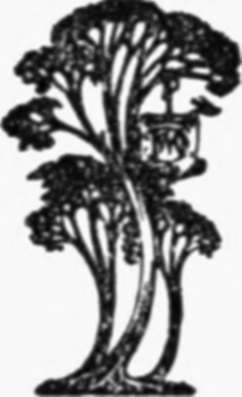

Nature Photography For Beginners | by E. J. Bedford
So far as I can ascertain, this is the first book treating of Nature Photography which is illustrated almost entirely by means of reproductions of stereoscopic photographs. I hope, therefore—notwithstanding the numerous existing volumes dealing in some form or other with the representation of Nature by means of the camera—that room will be found for this volume.
| Title | Nature Photography For Beginners |
| Author | E. J. Bedford |
| Publisher | J. M. Dent & Sons Ltd. |
| Year | 1909 |
| Copyright | 1909, J. M. Dent & Sons Ltd. |
| Amazon | Nature Photography for Beginners |
Nature Photography.
From Photographs Taken Direct From Nature By The Author
To: My Father And Mother who have always taken the greatest interest in MY work, I affectionately dedicate this book.
"We see distinctly only what we know thoroughly."
-Joseph Wolf.
 Preface
Preface- If it should also be the means of reviving stereoscopic work in the direction of Nature Photography I shall be highly gratified. The illustrations have been selected from a very large number in my ...
- Chapter I. Introduction
- The number of persons who are devoting some attention to the fascinating subject of Nature Photography appears to be on the increase, judging from the many books dealing with it, in some form or other...
- Chapter I. Introduction. Continued
- But whatever may be the class of work we are engaged in, let us above all things be sincere, and never represent a thing or palm off anything as representing what it is not. There are times when it is...
- Chapter II. Apparatus. The Camera And Plate Holders
- The choice of apparatus will to some extent be governed by the amount of money the photographer desires to invest, but let me at once say there are plenty of comparatively cheap cameras and lenses, et...
- Apparatus. The Camera And Plate Holders. Continued
- Supposing the size of camera has been definitely settled, let us now consider the points to be noted in selecting one. It should be strongly built and able to stand a certain amount of knocking about—...
- Chapter III. The Lens
- The lens is one of the most important items in the Nature Photographer's kit, even if it is not the most important. I propose, therefore, in this chapter to deal with some points concerning its use, w...
- Types Of Lenses
- Let us now consider the difference between the two types of lenses already mentioned. The Single Lens This consists of one lens which is usually composed of two or more different kinds of glass....
- Chapter IV. The Shutter, Tripod, And Other Etceteras
- The correct ideal shutter has yet to be invented. Certainly there are already many patterns to choose from, but there are also many important requirements which ought to be embodied in an ideal instru...
- The Tripod
- The choice of a stand or tripod requires great care, because all our efforts may be rendered futile by using one which is not firm and rigid. The selection of one, however, is not a difficult matter, ...
- Focussing Cloth
- The focussing cloth should be of ample size, at least a yard square, and may be even larger than this one way with advantage. It will be much easier to control in a wind if it comes well over the head...
- Tilting Board
- A piece of apparatus not usually found amongst the kit of the ordinary photographer will be very useful in Nature work. It consists in some form of tilting-board, to enable the lens to be pointed down...
- Exposure Meter
- Every photographer should possess and use an exposure meter. However experienced he may be, he will find this an additional aid to correct exposure; and correct exposure means a good negative. The dif...
- Chapter V. The Dark Room Developing And Printing
- The photographer who is able to devote to his own exclusive use a room for developing his exposures and for other photographic purposes should consider himself fortunate. Many of my readers may not fi...
- The Dark Room Developing And Printing. Continued
- Fig. 18. Moorhens Nest. Fig. 19. Nightjar's Eggs. Unexposed plates should be stored in a dry place free from fumes of gas or chemicals, and will then generally keep in good condition for...
- Printing Processes
- The two most permanent printing processes known are Platinotype and Carbon. The former will give either black or sepia-coloured prints, and the latter allows the choice of almost any colour to suit th...
- The Production Of Lantern Slides And Enlargements
- The Nature Photographer who has become proficient in the production of a good negative and print from it will probably wish to extend his operations. This he may do in the production of either lantern...
- Chapter VI. On The Choice Of Subjects
- The material which is available for Natural History Photography is, as I have already stated, so abundant that no difficulty is likely to be experienced in finding subjects. The difficulty which will ...
- Chapter VII. A Few Hints On Stereoscopic Nature Photography
- The astonishment generally expressed by any one looking at a good stereoscopic photograph for the first time is very striking. The sense of reality, and of being able, apparently, to see the third dim...
- A Few Hints On Stereoscopic Nature Photography. Part 2
- Some persons have an idea that two prints from the same negative mounted side by side will give stereoscopic relief, but this is entirely a fallacy and I will explain why. In looking at an object with...
- A Few Hints On Stereoscopic Nature Photography. Part 3
- The general directions given in the chapter on development, etc., will apply equally well to stereoscopic work, but there are one or two points which will require special consideration. One is to avoi...
- Chapter VIII. How To Observe And Photograph Some Of Our Commoner Birds And Their Nests And Eggs
- The reader who has followed me so far and who has obtained the necessary apparatus will, no doubt, be getting anxious to make a start in the practical work. I propose, therefore, to ask him to accompa...
- Birds And Their Nests And Eggs. Part 2
- For the purposes of photography, in commencing at least, the nests situated fairly low down will be the easiest to obtain studies of; therefore one need not look very high but near the ground. A great...
- Birds And Their Nests And Eggs. Part 3
- At last, let us suppose the day arranged for our first excursion has arrived. It is one of those delightful spring days when the sky is filled with fleecy clouds, of a kind to warrant us in assuming t...
- Birds And Their Nests And Eggs. Part 4
- But to-day, as I want you to get experience in developing by seeing the difference produced by various exposures, I suggest, as we have plenty of plates, that you expose another one on this same subje...
- Birds And Their Nests And Eggs. Part 5
- I intend to leave you to calculate the exposure necessary for this nest of the Hedge Sparrow because I want you to begin at once to learn to depend upon yourself. While you are making the exposure I w...
- Chapter IX. How To Observe And Photograph Some Of Our Commoner Birds And Their Nests And Eggs. Part 6
- Good afternoon; so you are ready for your second excursion. Although we have had several heavy April showers during the morning, the weather has become a little more settled since mid-day, and I don't...
- Birds And Their Nests And Eggs. Part 7
- Now we will make straight for the Plovers' field, and as their nests are very difficult to find we may not succeed in discovering one. The hen bird, if on the nest, will rise directly she hears the al...
- Birds And Their Nests And Eggs. Part 8
- You have just finished in time. There is a slight shower coming, I think; cover your camera right over with the waterproof focussing cloth and we will stand under the shelter of this tree for a few mi...
- Birds And Their Nests And Eggs. Part 9
- I have arranged to have tea to-day at the keeper's cottage, which is not far away, as we can work on while the light still remains good, and then go in to tea. You still have ten unexposed plates left...
- Birds And Their Nests And Eggs. Part 10
- I have two more subjects for you. There is a Green Woodpecker's nest in the trunk of an apple tree close by and a Moorhen's nest on the little pond just over there. As we pass the pond on our way to t...
- Chapter X. How To Observe And Photograph Some Of Our Commoner Birds And Their Nests And Eggs. Part 11
- What a nice day again. We are fortunate in the weather for our weekly excursions. I was glad to hear from your letter that you were successful last week in finding several nests, and I will tell you w...
- Birds And Their Nests And Eggs. Part 12
- The Starling's nest is in the thatched roof of this shed, but is concealed as much as, or perhaps even more than the last example. Perhaps we might leave that to-day, and when you have more time to sp...
- Birds And Their Nests And Eggs. Part 13
- Now bring the steps along and we can arrange the camera on stilts again, as we did in the case of the Missel Thrush. It is a good thing there is no wind, because the slightest breeze would cause the b...
- Chapter XI. How To Observe And Photograph Some Of Our Commoner Birds And Their Nests And Eggs. Part 14
- As we were prevented last week from making our contemplated excursion on account of the weather, we are now at the end of May, and to-day we ought to find some nests belonging to the later builders, i...
- Birds And Their Nests And Eggs. Part 15
- One advantage connected with these nests of the Warblers is that they are generally built low down in the bushes, and so make easy subjects to deal with on that account. I will go first, tapping with ...
- Birds And Their Nests And Eggs. Part 16
- We will now make our way to the farmhouse through the wood. There is a little clearing in the wood where I usually find a Nightjar's nest. I say nest, but, as a matter of fact, there is none, the t...
- Birds And Their Nests And Eggs. Part 17
- There is a story told which gives the reason why the Martin builds only half a nest. A long time ago, the Martin came to the Thrush for a lesson in nest building. While the Thrush was trying to tell h...
- Birds And Their Nests And Eggs. Part 18
- There is still an hour before the sun is timed to set, but the moon is already rising in the east. Its pale and silvery light cannot yet make itself apparent, but after the sun has set our satellite w...
- Chapter XII. Some Curious Nesting Places
- I propose to devote this chapter to the description of a few curious nesting places which have come under my notice from time to time. Some of the examples given are also illustrated. The Robin can...
- Some Curious Nesting Places. Continued
- The following story was related to me by an old friend. Near his house in the country was a cottage called The Box, which had been untenanted for some time. One day he told the members of his famil...
- Chapter XIII. The First Three Weeks In The Life Of A Cuckoo
- Some years ago, during one of my rambles for the purpose of Nature Photography, a man with whom I was acquainted brought two eggs to me, which he had taken from a nest not far away, with the request ...
- The First Three Weeks In The Life Of A Cuckoo. Continued
- The well-known cry of two notes is uttered both by the male and female bird in flight, as well as from a perch, and during the early part of the season may be heard at all hours of the day and night. ...
- Chapter XIV. Nightingale Lane
- During a favourite walk down a familiar lane about the end of the month of May, I saw a Nightingale with a leaf in her mouth and, feeling sure she was nest-building not far off, stood still to watch h...
- Chapter XV. The Photography Of Animals, Insects, And Flowers
- In the following chapter I propose to say a few words about the photography of Animals, Insects, and Flowers. I am quite aware, however, that it will be impossible to deal at all adequately with these...
- Photographing Animals
- Animals may be divided broadly into two classes, domestic and wild. In the latter I include such species as Rats and Mice; the Weasel, Stoat, Squirrel, Mole, Hedgehog, and Bats; also the Hare and Rabb...
- The Photography Of Insects
- This branch of work, although a fascinating one, is not altogether easy on account of the small size of many of the specimens which will have to be dealt with. There is ample work to be done, however,...
- Photographing Flowers, Etc
- Whatever branch of work the Nature Photographer specialises in he will be continually meeting subj ects which are worthy of having a plate exposed upon them, although perhaps not immediately connected...
- Chapter XVI. Protective Colouration
- I desire to draw the attention of the reader to a brief consideration of the intensely interesting subject of protective colouring which occurs in many forms of life. The student will be sure to come ...
- Protective Colouration. Continued
- But there are other considerations besides colour affecting this question, and changes of outline or form is one of the most important. The effect of a black or white band, or, for the matter of that,...